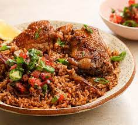

Pilau

A swahili dish made for the heart and soul!
Pilau is a specialty along the Swahili Coast in which Rice is flavored with spices and cooked in a well seasoned broth of Meat, Poultry or Fish.
It is also a festive Dish which never misses at every special occasion…
Ingredients
- 1/2 kg Basmati rice, washed (for better results I highly recommend Basmati reis)
- 1/2 kg potatoes – peeled, washed and coarsely chopped
- 1/2 kg beef, chicken or fish filet – cubed
- 1 small cup sunflower oil (or any other liquid oil)
- 4 cups of hot water or broth
- 1 onion, chopped
- 5 cloves of Garlic, crushed
- 1 fresh Ginger, crushed
- 2 fresh Tomatoes , sliced
- 2-3 teaspoon Pilau spices
- 3 Bay leave
Instructions
- Boil beef or chicken with ginger for 10 minutes.
Add potatoes and let them boil for 5 minutes then set aside
(separate the cooked ingredients from the broth so you can use it later)
- Heat oil and fry onions till light brown, add garlic and Pilau spices and on a low heat, fry for 1 minute
- Add tomatoes meat/chicken with potatoes and cook till tender
Add rice and ensure to mix everything very well before adding your broth or hot water then stir the mixture very well
Add salt and pepper to taste then cover the pot and cook on medium heat
- When the Food is nearly dry, lower down the heat to very low, cover your Pilau with aluminium paper
(please avoid newspapers or polythene papers) and place the lid on top.
Leave to cook for 10 minutes .
- Garnish with fresh coriander and serve hot with rice, ugali or chapati.
Here you are, your Pilau is ready!
Serve your Pilau hot with Kachumbari and Pilipili ya Maembe
A banana can also be used for garnishing
Some like to serve it with a tasty tomato sauce or beef/chicken stew on the side which is also very nice….